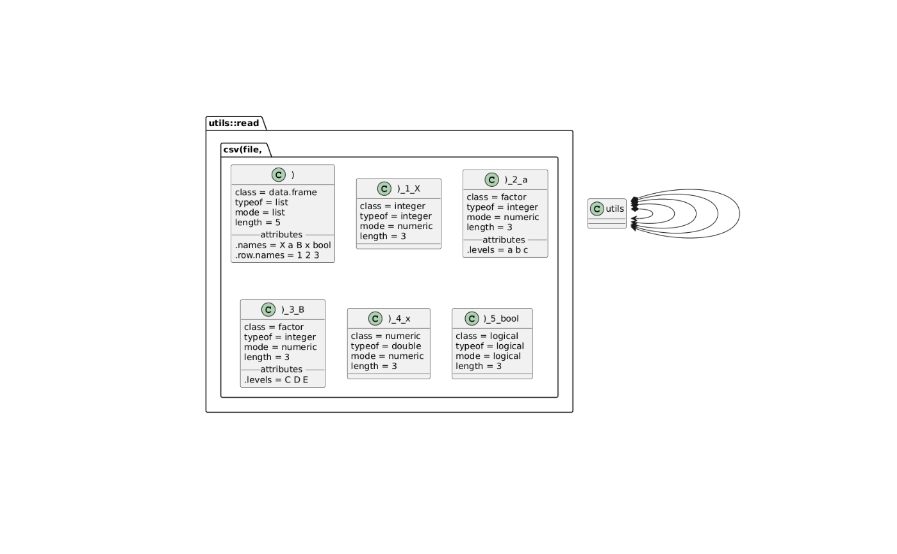
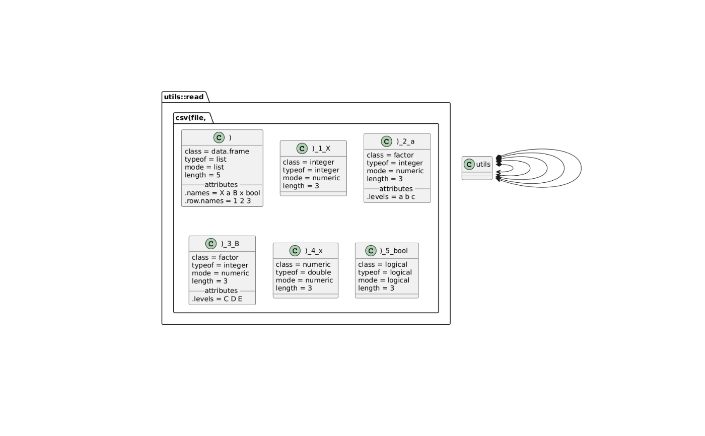

The function either plots the object including values (yaml and json) or
loads the object and plots the structure (csv and rds).
Exactly one of the two arguments (file or text) needs tobe specified.
Exactly one of the two arguments (file or text) needs tobe specified.
This is a convenience function which only reads the csv file using
read.csv(file, ...) and converts the resulting data.frame to a plantuml
object using plantuml().
This is a convenience function which only reads the rds file using
readRDS(file, ...) and converts the resulting object to a plantuml
object using plantuml().
plantuml_file(file, preamble = "", ...)
plantuml_yaml(file, text, preamble = "", ...)
plantuml_json(file, text, preamble = "", ...)
plantuml_csv(file, ...)
plantuml_rds(file, ...)Arguments
- file
file name of the
rdsfile. The function does not do any checking if the file is ardsfile!- preamble
text to be inserted after the
@startyamland before the actual yaml. For example style and highlight info. See https://plantuml.com/yaml for further info.- ...
additional arguments. Will be passed to
readRDS()- text
yaml text to be converted. The function does not do any checking if the file is valid yaml!
Value
a plantuml containing the yaml file for plotting
a plantuml containing the json file for plotting
a plantuml containing the structure of the csv file for plotting
a plantuml containing the structure of the rds file for plotting
Examples
if (FALSE) {
plantuml_file("name.yml")
plantuml_file("name.yaml")
plantuml_file("name.json")
plantuml_file("name.rds")
plantuml_file("name.csv")
}
## some preparations
x1 <- "name: Test yml\na:\n- a\n- d\n- c\nB:\n- C\n- D\n- E\nx:\n one: 0.2885\n two: 0.7498\n"
x2 <- "name: Test yml\na:\n- a\n- b\n- c\nB:\n- C\n- D\n- E\nx:\n one: 0.2865\n two: 0.7498\n"
fn1 <- tempfile(fileext = ".yml")
fn2 <- tempfile(fileext = ".yml")
writeLines(x1, fn1)
writeLines(x2, fn2)
## and now the example
plot(plantuml_yaml(fn1))
#> [1] "/tmp/RtmpVA9svX/plantuml.186d5d66de76.svg"
## Now let's see the differences between `fn1` and `fn2`
## this requires the package `yaml` to be installed
if (require(yaml)) {
plot(
plantuml_yaml(
file = fn1,
preamble = diff_yaml_json(yaml::read_yaml(fn1), yaml::read_yaml(fn2))
)
)
}
#> Loading required package: yaml
#> [1] "/tmp/RtmpVA9svX/plantuml.186d64053a82.svg"
## and cleanup
unlink(fn1)
unlink(fn2)
## some preparations
x <- '{"name":["Test json"],"a":["a","b","c"],"B":["C","D","E"],"x":[0.6464,0.6879]}'
fn <- tempfile(fileext = ".json")
writeLines(x, fn)
## and now the example
plot(plantuml_json(fn))
#> [1] "/tmp/RtmpVA9svX/plantuml.186d1c939290.svg"
## and cleanupo
unlink(fn)
## some preparations
x <- data.frame(
a = c("a", "b", "c"),
B = c("C", "D", "E"),
x = c(0.77, 0.38, 4.43),
bool = c(TRUE, FALSE, FALSE)
)
fn <- tempfile(fileext = ".csv")
write.csv(x, fn)
## and now the example
plot(plantuml_csv(fn))
 #> [1] "/tmp/RtmpVA9svX/plantuml.186d4f9c7174.svg"
# and only the fors columns (the rownames will not all be there)
plot(plantuml_csv(fn, nrows = 1))
#> [1] "/tmp/RtmpVA9svX/plantuml.186d2ffe5a25.svg"
# or character vectors as factors
plot(plantuml_csv(fn, as.is = FALSE))

#> [1] "/tmp/RtmpVA9svX/plantuml.186d219a7eb8.svg"
## and cleanupo
unlink(fn)
## some preparations
x <- list(
name = "Test list",
a = c("a", "b", "c"),
B = c("C", "D", "E"),
x = c(0.776318477466702, 0.381654617609456)
)
fn <- tempfile(fileext = ".rds")
saveRDS(x, fn)
## and now the example
plot(plantuml_rds(fn))
#> [1] "/tmp/RtmpVA9svX/plantuml.186d363b0a8f.svg"
## and cleanupo
unlink(fn)
#> [1] "/tmp/RtmpVA9svX/plantuml.186d4f9c7174.svg"
# and only the fors columns (the rownames will not all be there)
plot(plantuml_csv(fn, nrows = 1))
#> [1] "/tmp/RtmpVA9svX/plantuml.186d2ffe5a25.svg"
# or character vectors as factors
plot(plantuml_csv(fn, as.is = FALSE))

#> [1] "/tmp/RtmpVA9svX/plantuml.186d219a7eb8.svg"
## and cleanupo
unlink(fn)
## some preparations
x <- list(
name = "Test list",
a = c("a", "b", "c"),
B = c("C", "D", "E"),
x = c(0.776318477466702, 0.381654617609456)
)
fn <- tempfile(fileext = ".rds")
saveRDS(x, fn)
## and now the example
plot(plantuml_rds(fn))
#> [1] "/tmp/RtmpVA9svX/plantuml.186d363b0a8f.svg"
## and cleanupo
unlink(fn)